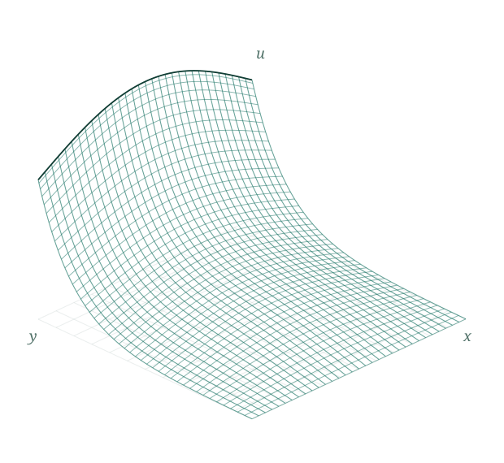
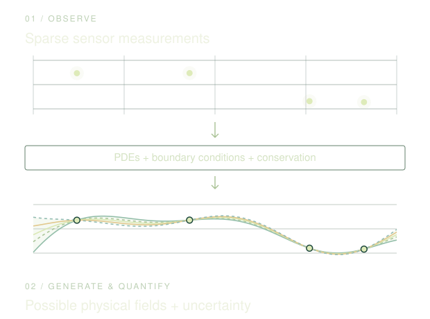

01PHYSICAL STRUCTURE
Physics-informed learning
Embedding governing PDEs and boundary conditions into neural architectures, physical constraints, and loss functions.
Physics-informed neural networks · PINNsPROFESSOR · UNIST
Scientific AI,
grounded in mathematics.
Connecting PDE analysis and numerical methods with AI — from learning sharp physical features to exploring generative models for sparse-data inverse problems.

Department of Mathematical Sciences
School of Natural Science
Ulsan, Republic of Korea
01 / CURRENT & FUTURE RESEARCH
My current interests center on scientific AI that respects physical laws and captures the features that are hardest to learn. I bring the analysis of PDEs, singular perturbations, and numerical methods to the design and evaluation of neural models.
Embedding governing PDEs and boundary conditions into neural architectures, physical constraints, and loss functions.
Physics-informed neural networks · PINNsCombining neural networks with analytical correctors to resolve shocks, boundary layers, and corner effects, where solutions change rapidly.
Singular perturbations · Analytical correctorsBringing local conservation from finite volume methods into neural models, with attention to accuracy, stability, and boundary and corner behavior.
Finite volume neural networks · FVNNsNEXT DIRECTION / GENERATIVE SCIENTIFIC AI
I aim to develop generative AI that reconstructs physical fields and identifies unknown sources from sparse sensor data, while quantifying uncertainty.
The goal is to generate multiple plausible solutions consistent with both observations and physical laws, and reveal where predictions remain uncertain.
Can a few temperature measurements reveal a full temperature field and an unknown heat source?

PLANNED VALIDATION PATH
WHAT I BRING TO COLLABORATION
I welcome collaborations in generative modeling, inverse problems, uncertainty quantification, and sensor-driven engineering applications.
Discuss a collaboration02 / FOUNDATIONS
The analytical and computational foundations of my research in scientific AI and partial differential equations.
Mathematical analysis.
Computational methods.
Scientific discovery.
Physics-informed neural networks and scientific machine learning.
Numerical approaches to differential equations.
Computation at the interface of mathematics and science.
Fluid dynamics, geophysics, and Euler–Poisson systems.
Boundary layer analysis and asymptotic behavior.
03 / PUBLICATIONS
9 entries · 2024–2026
Journal of Computational and Applied Mathematics474 (2026), 116918
Submitted
Submitted
Engineering Analysis with Boundary Elements175 (2025), 106178
Physica D: Nonlinear Phenomena469 (2024), 134320
Journal of Computational and Applied Mathematics450 (2024), 115989
Applicable Analysis103 (2024), 2554–2571
Computers & Mathematics with Applications166 (2024), 91–105
Computers & Mathematics with Applications162 (2024), 180–195
No publications match your search.
Published articles and submitted manuscripts.
04 / BACKGROUND
UNIST
UNIST
UNIST
Arizona State University
Indiana University
Brown University
Indiana University, Bloomington
POSTECH, Pohang
05 / MONOGRAPH
A mathematical study of singular perturbations and boundary layer problems, connecting rigorous analysis with applications in fluid mechanics and beyond.
Explore the book